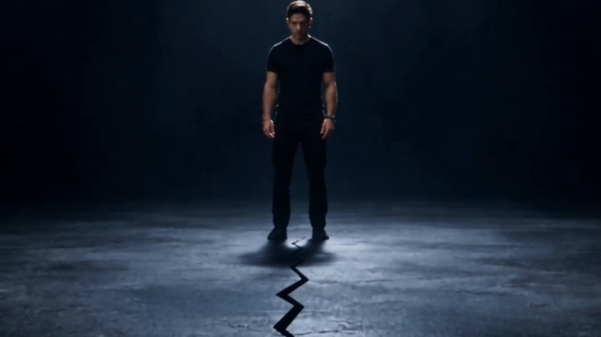

The studio — ● One room
A one-room studio,
on purpose.
Maverick Hub makes brand films, product launches and campaigns using AI production — directed, cut and graded by one person who has to sign their name to the frame.
The founder
I direct the film. The models render it.
I spent years cutting other people's footage before I started making frames of my own. The part of the job I care about has not changed: deciding what the shot is, and throwing away the version that almost works.
AI production changed the economics, not the craft. A brand can now afford six consistent films in the time a traditional shoot would take to book a location — but only if someone is directing, not prompting.
Maverick Hub stays small on purpose. A handful of films at a time, one director, no account layer between you and the cut.
- Studio
- Maverick Hub — an AI film studio for brands
- Working with
- Founders, DTC brands, agencies and in-house brand teams
- Engagements
- Single films, launch packages, retained campaign work
- Typical project
- Fixed fee per film · two to six weeks
- Territory
- US / UK / EU, remote
- Availability
- Taking briefs for Q1 2027
How it's made
Three stages, every time
Direction
The idea, the script, the look. We lock the frame before anything is generated — references, boards, lens and grade decisions.
- Treatment3–6 pages
- LookbookFrame-locked
- Sign-offBefore render
Render
Models chosen per shot, not per project. Plates and passes, iterated until the frame behaves like it was lit.
- PassesPer shot
- ContinuityTracked
- ReviewDaily cuts
Finish
Edit, sound, colour, delivery. A film, cut like a film — not a folder of clips.
- SoundScore & mix
- GradeStudio LUT
- Delivery4K + cutdowns

Position
Not a prompt shop.
There is no menu of styles, no per-second rate card and no template library. Every film starts from a treatment written for the specific product, and every frame is judged the way a frame is judged on a shoot: does it hold, and does it mean anything.
What that buys you is consistency. Six films that look like one campaign instead of six experiments that each look like the model's default taste.
If it looks like everyone else's AI film, it is not finished.